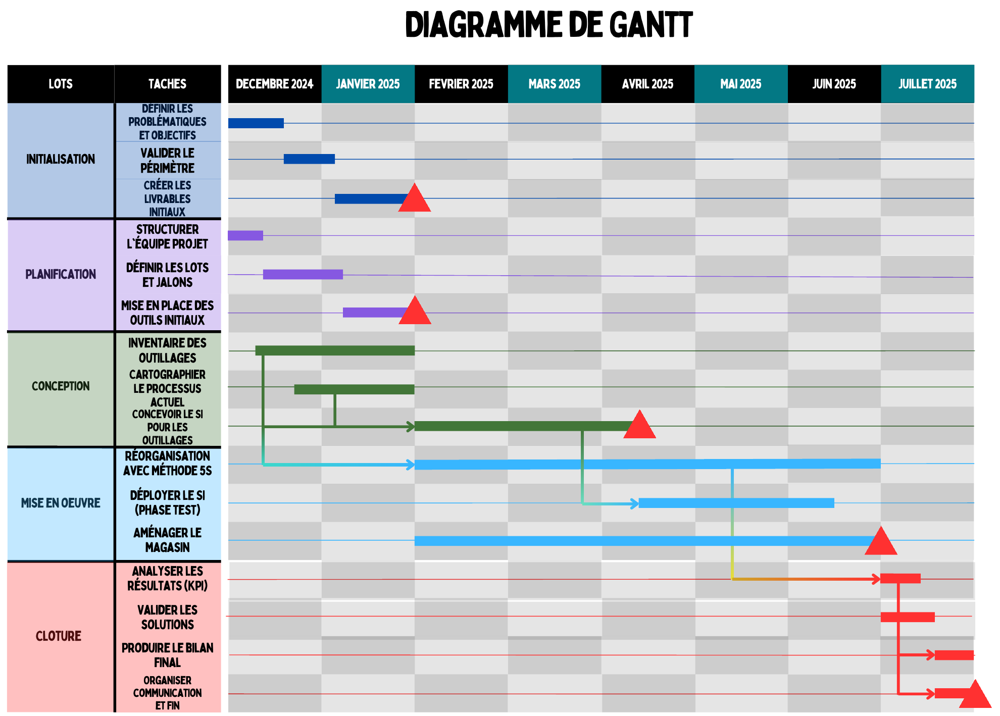

Milieu
Un espace insuffisant : l'outillage occupe les zones de production, qui ne sont plus flexibles.
PL. 07 · PROJET ÉCOLE · GESTION DE PROJET · 2025
Un cas d'étude inspiré de la maintenance moteur d'Air France Industries : désengorger les ateliers, fiabiliser la gestion des outillages et soutenir la croissance de l'activité.

01 · LA PROBLÉMATIQUE
Sur le site de maintenance moteur, un parc d'outillage énorme encombre les zones de production, bien au-delà de leur capacité. Beaucoup d'outils sont perdus, hors service ou obsolètes, et les informations de suivi sont souvent fausses.
Conséquences : du temps perdu à chercher les outils, des chantiers moteur stoppés faute d'outillage ou de place, et des zones de travail figées. Le tout alors que l'activité doit fortement augmenter, avec de nouveaux types de moteurs à accueillir.
Notre mission : proposer et planifier un projet pour réorganiser l'outillage et redonner de la productivité au site.
02 · LE DIAGNOSTIC
Un espace insuffisant : l'outillage occupe les zones de production, qui ne sont plus flexibles.
Aucun système d'information fiable pour savoir où se trouve un outil et dans quel état il est.
Pas de standards ni de mode opératoire partagé : un processus de mise à disposition lourd et défaillant.
Un manque de rigueur dans l'utilisation et le rangement des outils.
Des outillages défectueux, hors service ou obsolètes, mélangés aux outils opérationnels.
03 · LA SOLUTION
Le principe : les outils les plus utilisés restent dans l'atelier, tous les autres rejoignent un magasin dédié dans un bâtiment libre, et sont livrés à la demande.
Créer un magasin dans un autre bâtiment pour libérer les zones de production, en exploitant la hauteur pour optimiser l'espace.
Faire l'inventaire complet de l'outillage et le trier par état : opérationnel, hors service, à recycler. Puis réorganiser les zones avec la méthode 5S.
Créer un système d'information pour connaître l'emplacement et l'état de chaque outil, et anticiper les besoins de chaque chantier.
Le matin, chaque mécanicien commande sur une application les outils de sa journée. Le magasin prépare la commande, un prestataire la livre au poste, et les outils reviennent le soir.
04 · LA DÉMARCHE
Définir les problématiques et les objectifs, valider le périmètre, créer les livrables initiaux.
Structurer l'équipe, définir les lots et les jalons, mettre en place les outils.
Inventaire de l'outillage, cartographie du processus actuel, conception du système d'information.
Réorganisation 5S, déploiement du système en phase test, aménagement du magasin.
Analyse des indicateurs, validation des solutions, bilan final et communication.
05 · COMPÉTENCES ACQUISES
Passer d'un constat à une problématique claire, puis à des objectifs mesurables.
Remonter aux causes profondes d'un dysfonctionnement avec la méthode 5M.
Chercher à supprimer les gaspillages et réorganiser un espace de travail de façon durable.
Découper un projet en lots et en tâches, fixer les jalons et construire un diagramme de Gantt avec ses dépendances.
Identifier les risques du projet, les classer dans une matrice et prévoir des parades.
Défendre le projet devant un public lors d'une présentation de lancement (kick-off).
06 · OUTILS UTILISÉS
07 · EN CONCLUSION
Ce projet m'a fait passer de l'autre côté de l'ingénierie : non plus calculer, mais organiser. Comprendre un problème industriel dans son ensemble, en trouver les causes et bâtir un plan d'action réaliste avec une équipe.
Une approche que je mets aujourd'hui en pratique dans mon projet de fin d'études avec Air France.